Basic Data Analytics
Task 1 — Data Cleaning & Preprocessing
Dataset: Iris (150 rows × 5 cols) · Tools: Python, pandas
Loaded the Iris CSV with pandas; confirmed 150 rows, 5 columns, no original missing values.
Injected 10% random nulls across 4 numeric columns to simulate real-world missing data, then imputed with column medians (robust to outliers).
Removed 1 duplicate row using drop_duplicates().
Standardised species labels: stripped whitespace, lowercased, then title-cased → Setosa, Versicolor, Virginica.
# Median imputation for numeric columns for col in numeric_cols: df[col].fillna(df[col].median(), inplace=True) # Remove duplicates df.drop_duplicates(inplace=True) # Standardise categorical column df['species'] = df['species'].str.strip().str.lower().str.capitalize()
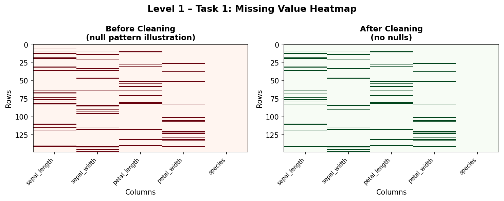
🔍 Key Insights
- Median imputation was chosen over mean because it is unaffected by extreme values — important for small datasets.
- Standardising string casing prevents silent duplicates where "setosa" ≠ "Setosa" in groupby operations.
- Final clean dataset: 149 rows × 5 columns, ready for downstream analysis.
Task 2 — Exploratory Data Analysis (EDA)
Dataset: Iris · Tools: pandas, matplotlib, seaborn
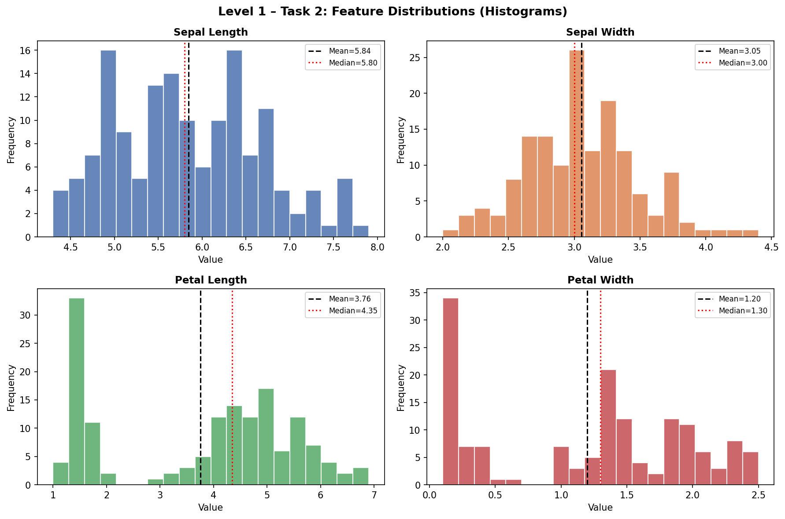
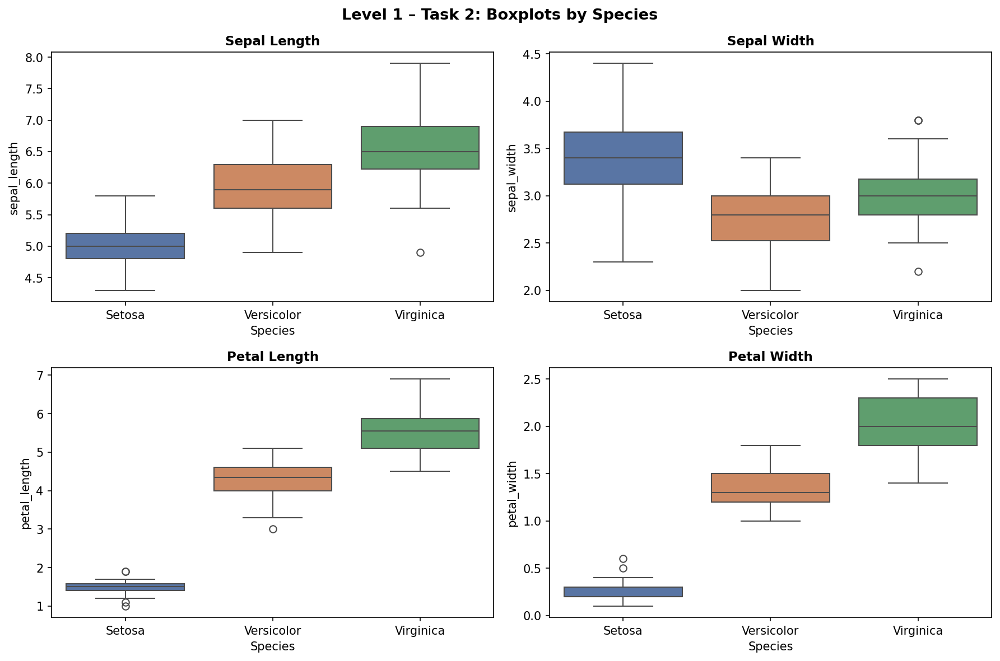

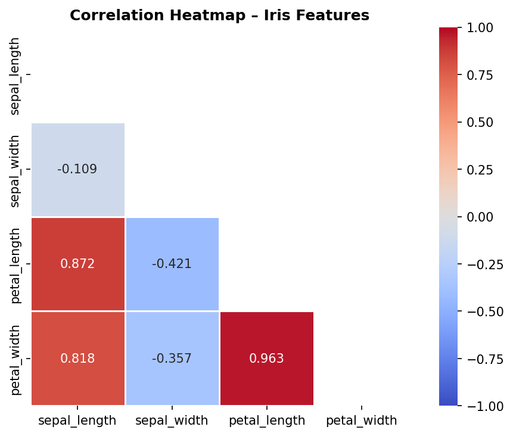
🔍 Key Insights
- Petal Length & Width have the strongest correlation (ρ = 0.963) — highly collinear.
- Setosa is linearly separable from Versicolor and Virginica on all petal features.
- Sepal Width shows the least discriminative power (smallest between-species variance).
- Petal length distribution is bimodal — a clear sign of two underlying populations.
Task 3 — Basic Data Visualization
Dataset: Iris · Tools: matplotlib, seaborn
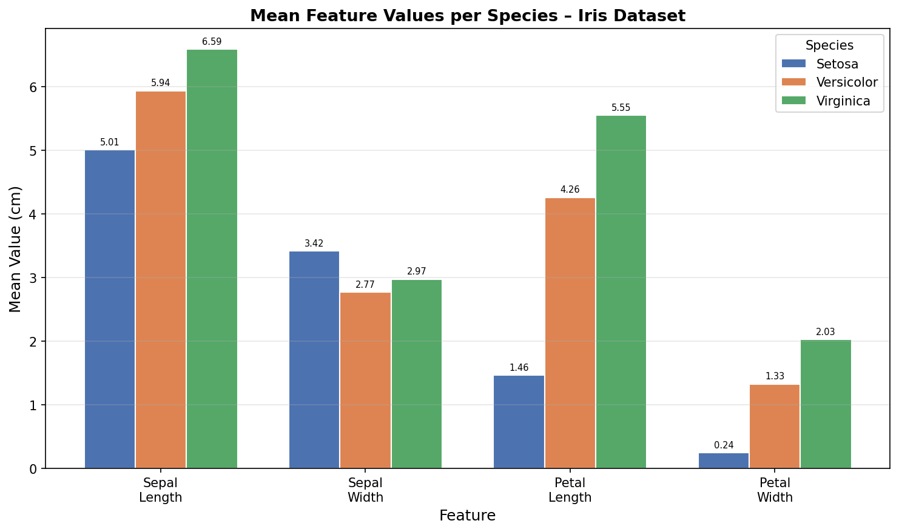
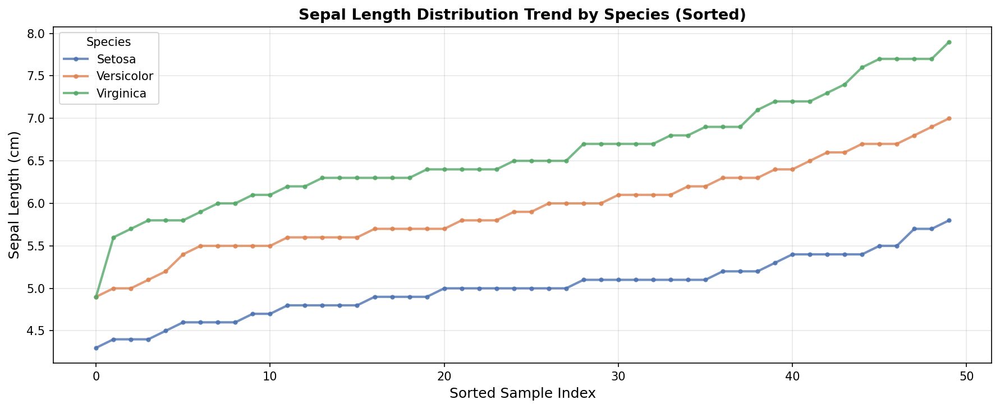
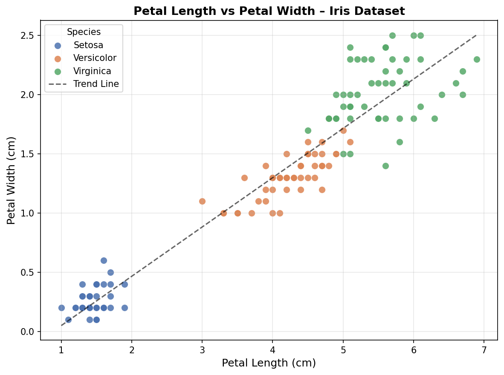
🔍 Key Insights
- Virginica has the largest mean values across all features, while Setosa consistently has the smallest petals.
- The scatter plot with a trend line confirms a near-perfect linear relationship (ρ = 0.963) between petal dimensions.
- All plots include custom titles, axis labels, and legends as required by the task objectives.
Intermediate Analytics
Task 1 — Regression Analysis
Dataset: Boston Housing (506 rows × 14 cols) · Tools: scikit-learn, pandas
| Feature | Coefficient | Impact |
|---|---|---|
| RM (Avg Rooms) | +3.145 | Positive |
| RAD (Highway Access) | +2.251 | Positive |
| LSTAT (% Lower Status) | −3.612 | Negative |
| DIS (Distance to Jobs) | −3.082 | Negative |
| PTRATIO (Pupil:Teacher) | −2.038 | Negative |
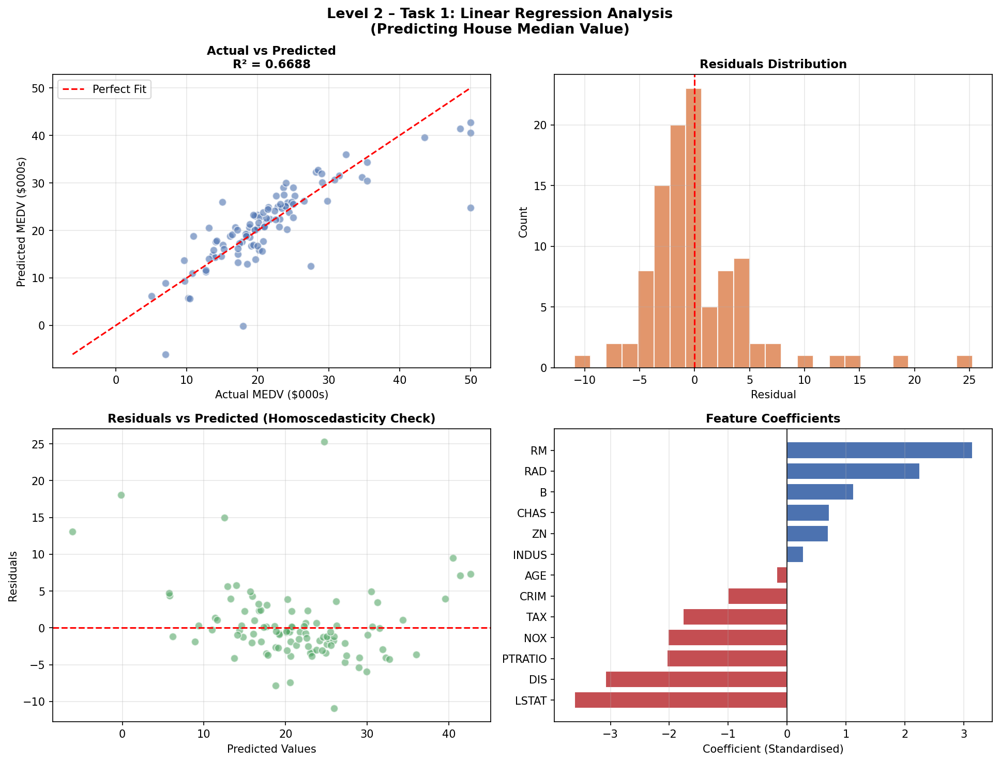
🔍 Key Insights
- R² = 0.669 — the model explains ~67% of house price variance; decent for a linear model on this complex dataset.
- Higher average rooms (RM) and lower % of low-status population (LSTAT) are the strongest predictors of higher prices.
- Residuals are approximately normally distributed around zero — a good sign for linear regression assumptions.
- Some heteroscedasticity is visible at high predicted values, suggesting non-linear relationships exist.
Task 2 — Time Series Analysis
Dataset: Stock Prices (505 symbols, 2014–2017) · Focus: AAPL · Tools: pandas, matplotlib
Parsed date column and filtered for AAPL (1,007 trading days from Jan 2014 – Dec 2017).
Computed 7-day, 30-day, and 90-day rolling moving averages to smooth short-term noise.
Manual decomposition: Trend (30-day centred MA), Seasonality (day-of-week pattern), and Irregular residual.
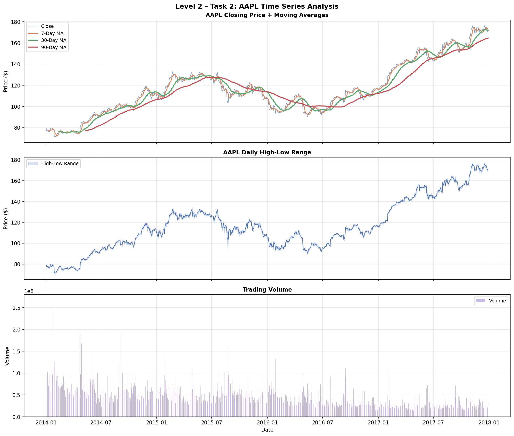
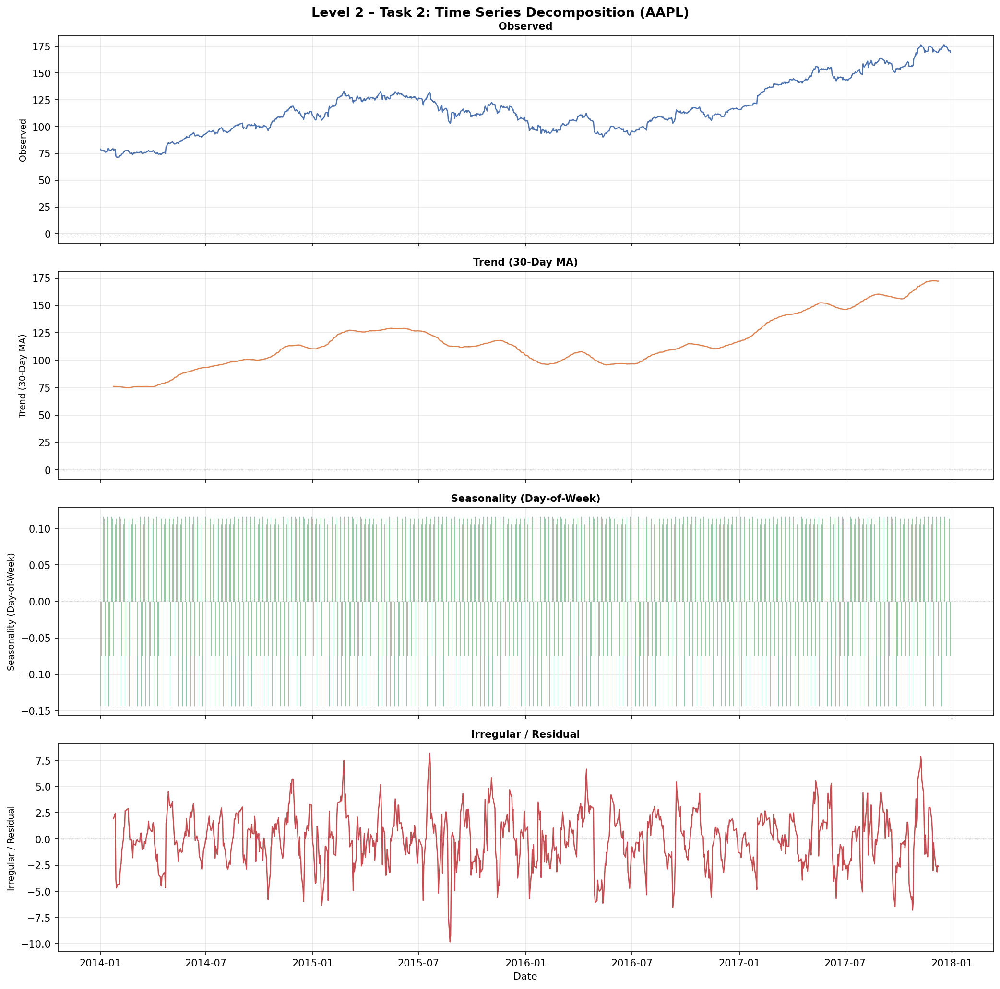
🔍 Key Insights
- AAPL showed an overall upward trend from ~$80 (2014) to a peak near $176 (late 2017).
- A notable dip in 2016 (~$90) corresponds to concerns about iPhone sales growth slowdown.
- Trading volume spikes correlate with earnings announcements and major product reveals.
- The 90-day MA smooths out all short-term volatility and clearly shows the multi-year bull trend.
Task 3 — Clustering Analysis (K-Means)
Dataset: Iris · Tools: scikit-learn, matplotlib, seaborn
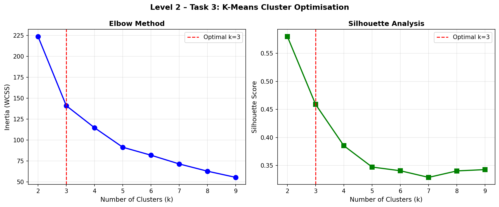
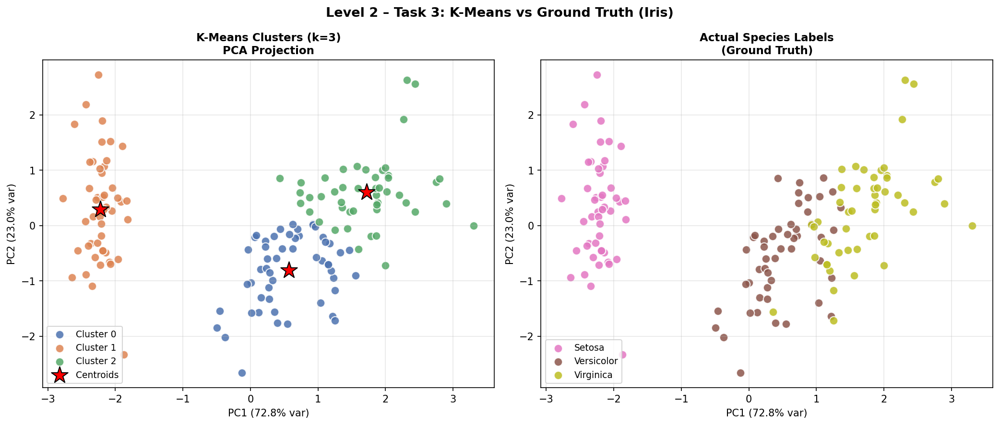
🔍 Key Insights
- The elbow in the inertia curve and peak silhouette both confirm k = 3 as optimal — matching the known 3 species.
- PCA's first 2 components retain 95.8% of total variance, enabling faithful 2D visualisation.
- Cluster 1 (Setosa) is perfectly separated; Clusters 2 & 3 (Versicolor/Virginica) have slight overlap — consistent with biological similarity.
- Cluster sizes: 53, 50, 47 — closely balanced and matching ground-truth class sizes.
Advanced Analytics
Task 1 — Predictive Modeling (Classification)
Dataset: Telecom Churn (2,666 train · 667 test) · Tools: scikit-learn, pandas
| Model | Accuracy | Precision | Recall | F1 | AUC |
|---|---|---|---|---|---|
| Logistic Regression | 85.5% | 47.4% | 19.0% | 0.271 | 0.827 |
| Decision Tree | 91.3% | 68.3% | 72.6% | 0.704 | 0.835 |
| Random Forest | 95.5% | 94.5% | 72.6% | 0.821 | 0.915 |
| Tuned RF (GridSearch) | 95.0% | 92% | 74% | 0.820 | — |
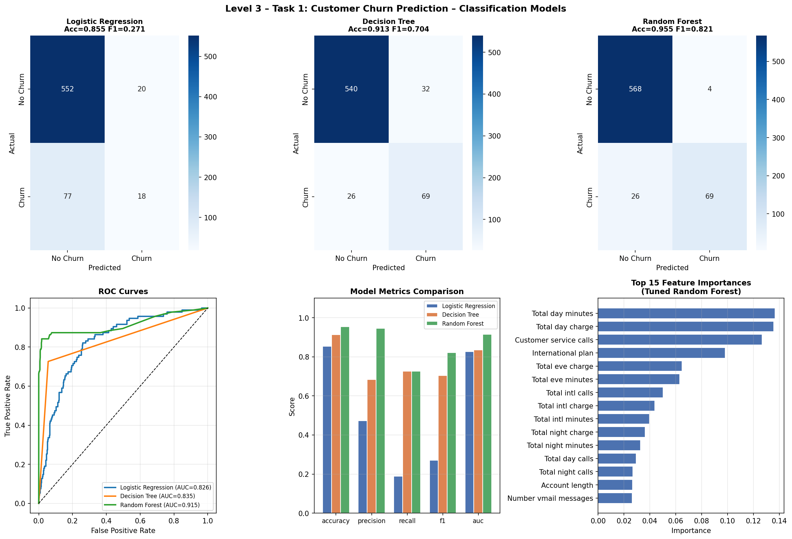
🔍 Key Insights
- Random Forest outperforms all models — AUC 0.915 and accuracy 95.5%, making it the production-ready choice.
- Logistic Regression suffers on recall (19%) due to class imbalance (~85% non-churn), highlighting the need for ensemble methods.
- GridSearch best params:
max_depth=None, min_samples_split=5, n_estimators=100. - Top churn predictors: Total day charge, Customer service calls, International plan — actionable for business retention strategy.
- High customer service call frequency is a strong churn signal — could trigger proactive outreach.
Task 3 — NLP Sentiment Analysis
Dataset: Social Media Posts (732 rows) · Tools: Python (regex, Counter), pandas, matplotlib
Text preprocessing pipeline: URL removal → mention/hashtag stripping → punctuation removal → lowercasing → tokenisation → stopword filtering (custom 200-word list).
Sentiment classification: The dataset contains 191 fine-grained emotion labels (Joy, Excitement, Anger, Fear, etc.) — significantly richer than basic Positive/Negative/Neutral.
Word frequency analysis per sentiment class using Python's Counter. Built per-class vocabulary with top-N words extracted.
Temporal trend analysis: Monthly sentiment post counts aggregated to detect changes over time.
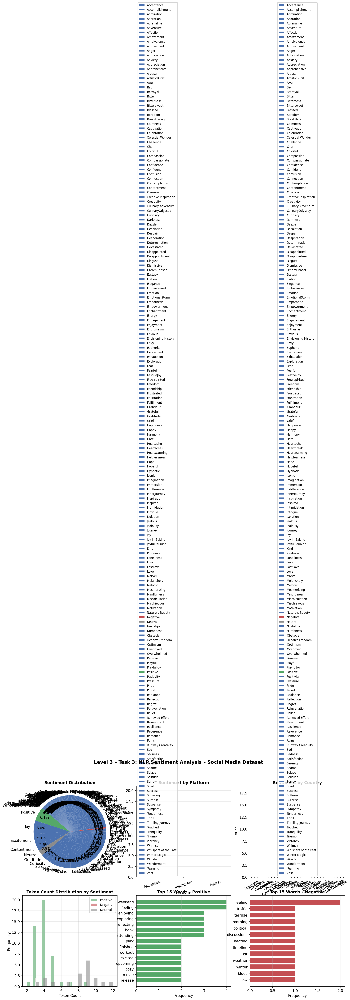
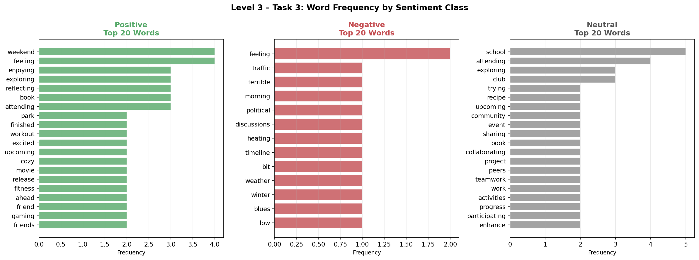
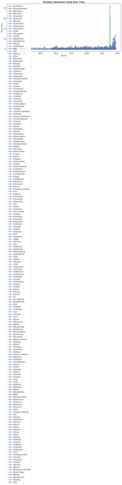
🔍 Key Insights
- The dataset uses 191 fine-grained emotion labels — far richer than standard sentiment, enabling nuanced analysis.
- Positive sentiment posts use context words like weekend, enjoying, exploring; negative posts feature terrible, traffic, political.
- Twitter dominates with the most posts across all sentiment classes; Instagram skews more positive.
- USA and Canada contribute the highest volume of labelled posts in this dataset.
- Text preprocessing successfully reduced noise: URLs, @mentions, #hashtags, punctuation, and stopwords all removed before analysis.